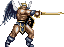
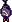
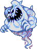
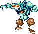
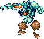
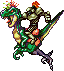
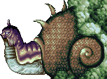

Fans of the original "Actraiser" are generally disappointed with this sequel, as its predecessor combined a traditional 2-d action mode with an addicting "simulator" mode that allowed you to direct human civilization and even control the weather.
Actraiser 2 does indeed completely omit these strategy/roleplaying elements, opting instead for a straight-up action game. In all fairness, however, Actraiser 2 stands on its own as an action title nearly as bad-assed as Demon's Crest, and that's saying something.

In Japan, the hero of Actraiser is God himself, and your opponents are Lucifer and the Seven Deadly Sins. Fearing backlash from uptight fundamentalists who don't buy videogames, God is referred to in the translation as simply "Master", and the Devil operates under the alias "Tanzra". Inexplicably, all of the deadly sins were renamed except for Gluttony.
Traversing the world map in a floating castle, you are free to choose from a number of towns and cities under attack by demonic forces. Completing one of the initially accessible stages unlocks a second, more difficult quest, and completing all of these will unlock the semi-final stage, the Tower of Souls (or, in Japan, Tower of Babel)
The Enemies
(Info on mouse-over)






 


Stages & Bosses
There are eight different kingdoms to liberate in Actraiser 2, most of them with two different stages to complete before the people are finally free. Divided un-evenly amongst these stages are six minibosses and thirteen actual demon bosses (not counting the devil himself), seven of which symbolize the deadly sins. Before the game begins, you can watch an intro stage in which Tanzra/Lucifer is cast out of heaven in a unique form you will find nowhere else:
This "demo" is playable with a special password, but extremely short. The imp-like enemies, however, are also unique. Tanzra/Satan does little more than bob and down, attacking with energy from his mouth while periodically exposing his one weak point like the nitwit he is.
Upon his defeat (or a magical press of the "start" button), we jump to the game itself...
"The People here used to work very hard at keeping this land healthy. It was once famous for its beautiful forests and rivers. One day these people lost their desire not only to work but also to live."
A town named Diligence is a natural target for "Fatigue", also known as the demon of Sloth. To restore Diligence to its former...well, diligence, you must track down Fatigue/Sloth in the swampy mushroom forest of Industen. Like most other stages, you will never actually enter the town you are liberating.
The giant, mobile plant charges from one end of the screen to the other, stopping to gnash its jaws at you while spitting a spray of energy.
-Industen Demon-
Riding a possessed rain-cloud, this lesser demon of Sloth throws an endless barrage of sickles while his cloud periodically threatens to suck you in or blow you away. When defeated, your angel-guide explains that his rain was what corrupted the town of Diligence.
Stage: Benefic
"Upstream of the Benefic river, this area seems to be infested with demons. Cleanse the water by defeating the demons."
This stage consists almost entirely of a shallow stream inside a massive grotto. The water will perpetually slow you down as you ward off bats and fish-goblins.
-Mid-boss-
Benefic's mid-boss is a really neat-looking giant cobra that opens up its jaws to spray fire.

-Fatigue/Sloth-
The huge snail lodged in the back of the cave releases spiked spheres into the flowing stream, fires thin beams from its antennae, and sends boulders crashing down from the ceiling. It only opens its surprisingly large and toothy mouth when it is dying.
Many players are under the impression that the cloud-riding, sickle-throwing skeleton is the demon of Sloth, but it is only after defeating this colossal mollusk that Diligence is freed, and you will fight it again with the other deadly sins in the true final stage.
The town of TEMPONIA
"Temponia used to be known for its great abundance of food. The demon "Gluttony" entered this city and devoured everything. Soon, people began to starve and fight with one another. Gules began attacking travelers in Modero, the nearby desert."
..."The desert has become horrible. People who have passed away due to starvation have been turned into Gules by the demon. The giant mouths, towards the sky, are part of the demon. There are many cliffs here, and we are unsure what is beneath."
As already implied, Modero is a deliciously unpleasant place featuring vast pits of living, demonic mouths. The actual ground is comprised of bones and fleshy sludge, the same stuff that forms our shambling, one-eyed "Gules".

-Mid-boss-
This giant buzzard is just a darker-colored version of buzzards that hover throughout Modero and never actually attack you. This one, however, will spit fireballs (like practically everything else in the world) and occasionally swoop down at you.
One of the best boss fights I've ever experienced as far as concept goes, you will battle the lord of all Gules in an underground chamber over a lake of blood, while flying eyeballs attack from above. The boss starts out huge, but shrinks with every hit.
Part II of Temponia's salvation sends you deep into the heart of a demonically mutated ant's nest, In addition to the ants and their big-mouthed larvae, you'll encounter strange reptilian pill-bugs and giant goblin-headed spider-beetles.
Pretty damn creative to link a Gluttony demon with ants, wouldn't you say? The monstrous ant queen attacks by swinging down and biting, or by detaching from her abdomen entirely, which unsheathes a scorpionlike tail. During this battle, eggs randomly drop from the ceiling and hatch into crawling grubs (see enemies).
"Justania is famous for its army. The king, having been invaded by a demon, forced his army to attack Favorian. Day by day the number of victims increased. Master, let us go to the Death Field and stop this war."
"The demon "Fury" has entered the volcano. It has started to erupt. If you don't defeat this demon, we will have another king and war just like Justania."

The source of the cold in this stage is a giant, frozen woman who can transform into a spiky ice-ball, explode, and re-form ad infinitum. In humanoid form, she doesn't really move, but floats around as a static image. Weird.
The mind of a king overcome with Lust is a surprisingly boring place apart from lots of ghosts and a brief but frustrating maze of blue jelly (which rotates every few seconds, and changes your controls along with it)
Lust hovers in an empty void resembling outer space with random boulders to jump around on. It can fire stuff from its mouth or tail, and teleports to a new position every few seconds
Gratis features the same mid-boss as Lovaous Palace, above.
Definitely the boss with the most personality, this pompous little goblin-king flies around his throne room (in a standing position!) and attacks with a variety of magical explosions and beams. I love the painting he has above his throne.
Stormrook is the abode of Greed, formerly the king of Leon, who's English name has become "Doom" because I guess American children can't handle the concept of greediness. Despite having no water, this golden castle is the only stage featuring giant crabs (which you can ride across spikes). Weird.
GREED (how do you even convert that to "doom" anyway?) hangs out on a giant pile of gold in the central chamber of Stormrook castle. He breathes - get ready for this - fire, and that's pretty much all there is to say about this guy.
The little claw-feeler thing is slow-moving, but constantly reaching in your general direction and periodically firing beams. From the eye, this monster can unleash a pulsing grey orb that follows chases you around and temporarily petrifies on contact.
"This is a sub-marine castle where a queen once lived. The demon "Jealousy" [in Japan: Envy] conquered her. The flame of her jealousy still exists. If you wish to defeat this demon, you must extinguish the flame of jealousy."
"The people of Humbleton are very civilized. Master, they are devising a preposterous plan. They... they are trying to become masters themselves. They are constructing a tower to try and reach the sky castle. I wonder when they will stop being so reckless."
Though no demon is actually named here, it's quite clearly a battle against pride. The tower itself features the game's only mechanical enemies, which is fairly interesting. Towards the end, you will battle poorly recolored versions of every mid-boss in the game.
On easy mode, this is the game's final boss, but play on a harder difficulty and you'll unlock one more stage...
Tanzra's Underground Fortress [Japan: Hell]

Sadly, the level consists only of the previous deadly sins in tacky new colors, and offers no new enemies.

AIM / Yahoo: Scythemantis
Email / MSN: bogleech@hotmail.com

{kind=link}
{kind=link}